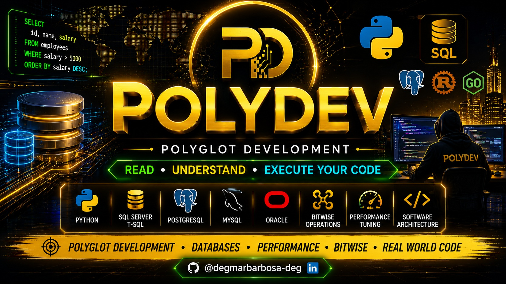

10 decorators profissionais utilizados em engenharia Python, automação, performance tuning, microservices e arquitetura moderna.
Decorators representam uma das funcionalidades mais elegantes e poderosas do Python. Eles permitem modificar comportamentos de funções sem alterar diretamente o código original. Neste artigo avançado vamos explorar decorators usados em:
Material voltado para aplicações reais utilizadas em ambientes profissionais.
Decorator para medir tempo de execução com precisão usando time.perf_counter().
def timer(name: str = None):
def decorator(func):
@wraps(func)
def wrapper(*args, **kwargs):
start = time.perf_counter()
result = func(*args, **kwargs)
end = time.perf_counter()
print(f"{end - start:.6f} segundos")
return result
return wrapper
return decorator
Excelente para benchmark, tuning e análise de performance.
Padrão extremamente utilizado em APIs, cloud computing, microservices e automação resiliente.
def retry(max_attempts=3, delay=1.0):
def decorator(func):
@wraps(func)
def wrapper(*args, **kwargs):
for attempt in range(1, max_attempts + 1):
try:
return func(*args, **kwargs)
except Exception:
wait = delay * (2 ** (attempt - 1))
time.sleep(wait)
return wrapper
return decorator
Uma das técnicas mais importantes para sistemas distribuídos.
Implementação manual de cache com expiração temporal.
def ttl_cache(seconds=60):
def decorator(func):
cache = {}
@wraps(func)
def wrapper(*args, **kwargs):
key = args + tuple(sorted(kwargs.items()))
now = time.time()
if key in cache:
result, timestamp = cache[key]
if now - timestamp < seconds:
return result
result = func(*args, **kwargs)
cache[key] = (result, now)
return result
return wrapper
return decorator
Excelente para APIs, machine learning, queries pesadas e cálculos repetitivos.
def log_execution(level="info"):
def decorator(func):
@wraps(func)
def wrapper(*args, **kwargs):
logger = logging.getLogger(func.__module__)
logger.info(f"Executando {func.__name__}")
result = func(*args, **kwargs)
logger.info(f"Retorno: {result}")
return result
return wrapper
return decorator
Muito utilizado em observabilidade, debugging e rastreabilidade corporativa.
def rate_limiter(calls_per_second=1.0):
min_interval = 1.0 / calls_per_second
last_call = [0.0]
def decorator(func):
@wraps(func)
def wrapper(*args, **kwargs):
now = time.time()
elapsed = now - last_call[0]
if elapsed < min_interval:
time.sleep(min_interval - elapsed)
last_call[0] = time.time()
return func(*args, **kwargs)
return wrapper
return decorator
Proteção elegante contra abuso de APIs públicas.
async def wrapper(*args, **kwargs):
start = time.perf_counter()
result = await func(*args, **kwargs)
end = time.perf_counter()
print(f"[Async] {end - start:.6f}s")
return result
Ideal para aplicações modernas usando asyncio.
def singleton(cls):
instances = {}
def wrapper(*args, **kwargs):
if cls not in instances:
instances[cls] = cls(*args, **kwargs)
return instances[cls]
return wrapper
Muito utilizado em:
def deprecated(reason=""):
def decorator(func):
@wraps(func)
def wrapper(*args, **kwargs):
print("Função depreciada")
return func(*args, **kwargs)
return wrapper
return decorator
Excelente para evolução segura de sistemas legados.
def validate_types(**type_hints):
def decorator(func):
@wraps(func)
def wrapper(*args, **kwargs):
for name, expected_type in type_hints.items():
if name in kwargs and \
not isinstance(kwargs[name], expected_type):
raise TypeError()
return func(*args, **kwargs)
return wrapper
return decorator
Ajuda na robustez, segurança e padronização corporativa.
def profile(sort_by="cumulative", lines=10):
def decorator(func):
@wraps(func)
def wrapper(*args, **kwargs):
pr = cProfile.Profile()
pr.enable()
result = func(*args, **kwargs)
pr.disable()
return result
return wrapper
return decorator
Ferramenta extremamente poderosa para tuning avançado.
Esses decorators representam técnicas utilizadas em projetos profissionais, engenharia de software, automação, observabilidade e aplicações de alta performance.
Python continua sendo uma das linguagens mais elegantes do mercado quando o assunto é metaprogramação.